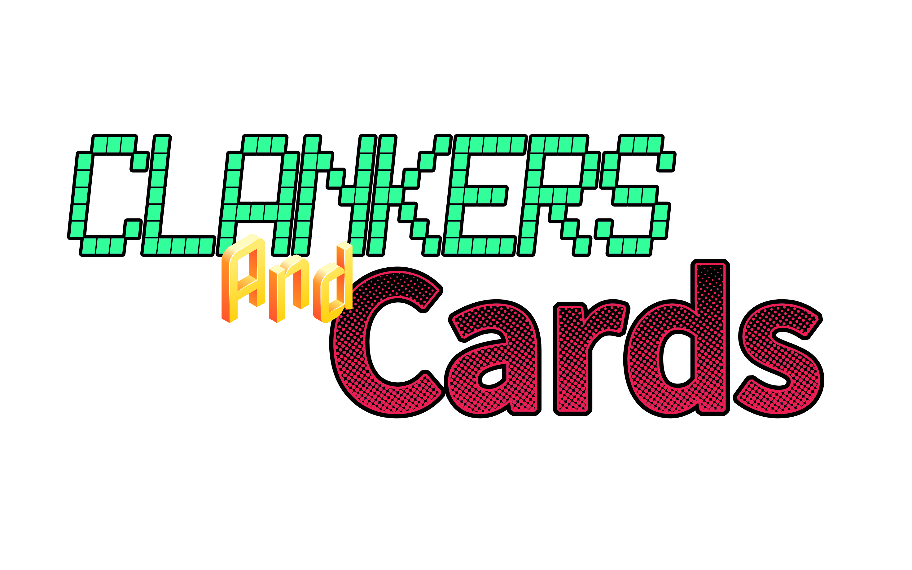

This is a first person [STORYLESS] online card game where you can play as a sentient ai or screen face from popular media!
You can play a big variety of different card games like all kinds of poker, uno and many others!
Maybe you'd like to explore the lobby and find various interesting locations, places to relax with company.
Maybe even play physical games like hide and seek, tag and others you could come up with!
You can find secret areas you might enjoy and [have no lore implications] to admire!
and of course interact with everyone's favorite attendant Hugo U. "Manatee"!
Thanks to our collectors team, we have a variety of companions that you can play around with, please click any of their screens to meet them!